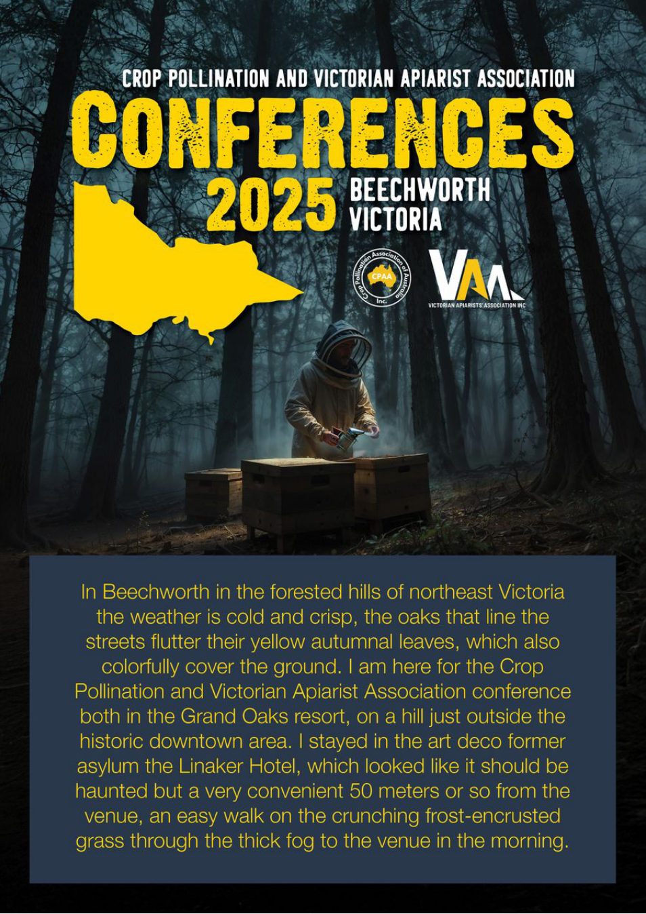

CROP POLLINATION AND VICTORIAN APIARIST ASSOCIATION
In Beechworth in the forested hills of northeast Victoria
the weather is cold and crisp, the oaks that line the
streets flutter their yellow autumnal leaves, which also
colorfully cover the ground.
I am here for the Crop
Pollination and Victorian Apiarist Association conference
both in the Grand Oaks resort, on a hill just outside the
historic downtown area.
I stayed in the art deco former
asylum the Linaker Hotel, which looked like it should be
haunted but a very convenient 50 meters or so from the
venue, an easy walk on the crunching frost-encrusted
grass through the thick fog to the venue in the morning.